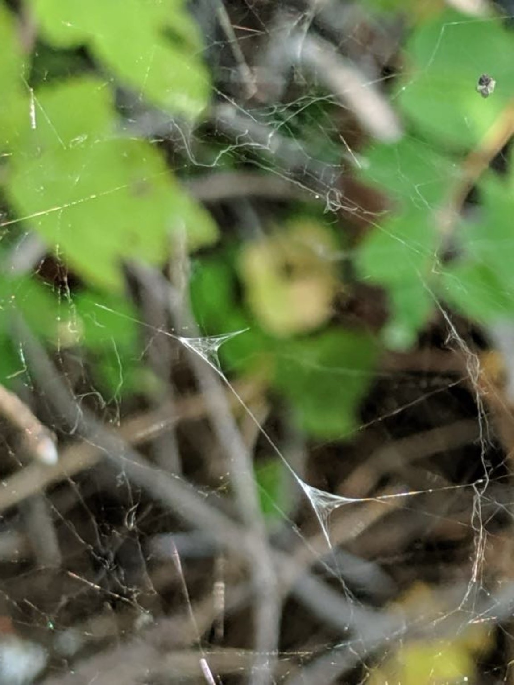
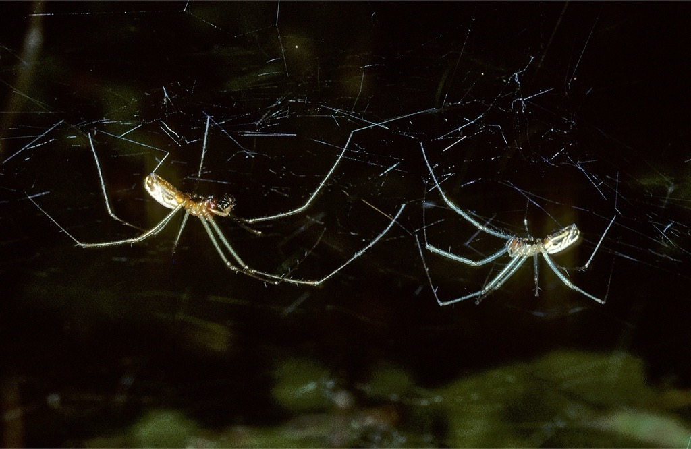
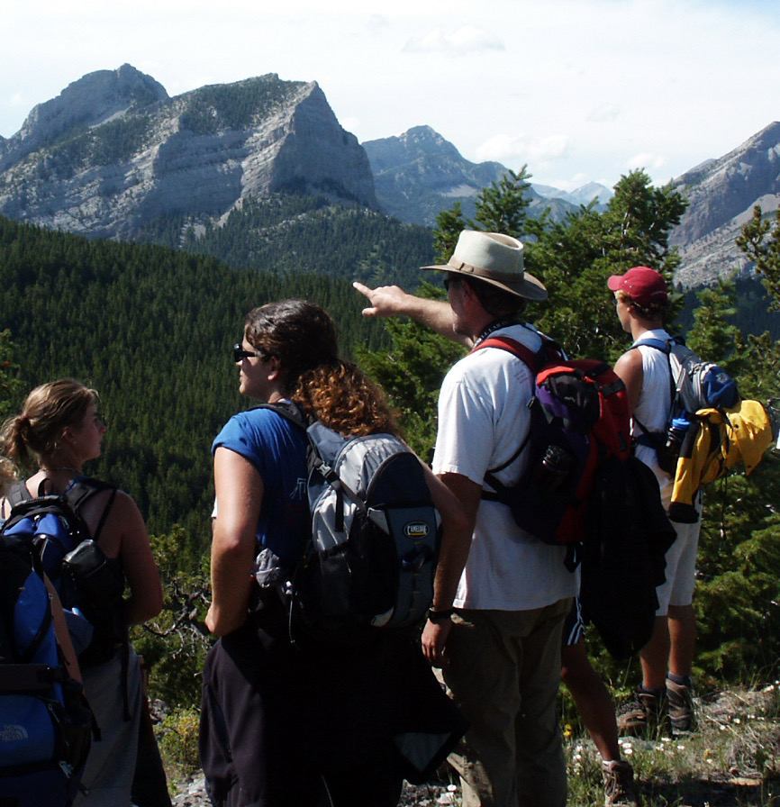

The official website for Dr. Paul J. Watson
is migrating and updating to a new and better home.
I am seeking one or two research associates / independent study students for the summer of 2026 to work with me for 8 weeks or more at Flathead Lake Biological Station. I have had many fine assistants over the years helping me study the Sierra Dome Spider. But now, I am looking for individuals who, in addition to wanting a grad school prep research experience, could seriously consider continuing the deep study of the Sierra Dome spider’s sexual selection system as a central part of their life’s work, as Yours Truly has done. At the age of 68, still healthy and loving the work, I am looking for a scientific heir.
There is massive opportunity available to the right person to continue studying this amazing model system long-term: solidifying and expanding behavioral observations (including female-specific sperm utilization patterns), adding new research elements needed to fully characterize the complexity of this mating system and to elucidate its evolution.
My emphasis now, since 2024, is documenting not just species-typical patterns of intra- and intersexual behaviors, but also the diverse ways that individuals of both sexes develop to optimize both mind and body in an integrated way for playing the mating game.
There is also potential for a wide range of not just relevant but essential molecular biological investigations — for example, exploring how rickettsial diseases have affected the evolution of the mating system and individual development, and how microbiomes and their interactions with genotypes and gene expression patterns influence individual developmental optimizations — how everything from genes to microbes shapes the “personality development” of individual spiders in ecological time.
As part of this offer, I seek dedicated serious coauthors to assist me in publishing a considerable backlog of material — ranging from copious raw data (e.g., on individual variation in courtship energetics) to almost completed manuscripts. I would only claim secondary or last authorship.
It is exceedingly rare to find a complex sexual selection system so fantastically observable and manipulable in both the field and the lab: Consider letting me show you the ropes and hand off this stunning model study system to YOU, young sexual selection investigator. Time is limited! I have appreciable funds to help support you as you join me in continuing this unusually long-term and in-depth research. Call me.
Lucky Sighting of a Double Sperm Web. Constructed in the dome of a female's web between copulatory courtship and insemination phase copulation in the Sierra Dome spider. Join me in continuing the study, and you too can be this lucky.
Sierra Dome spider (adult instar). Male left, female right.
Dr. Paul J. Watson is Adjunct Associate Professor of Biology at the University of New Mexico since 1988, and a Faculty Affiliate / Independent Researcher at the Flathead Lake Biological Station in northwestern Montana, where he has worked on animal behavior projects and teaching field courses most summers since 1980. Over decades, he has conducted long-term research on the Sierra Dome spider’s sexual selection system, as well as many other shorter-term studies. The extensive background data collected on the Sierra Dome, together with many other features of this spider species, not least its exceptional observability and manipulability in field and lab, offers me and new young investigators a uniquely powerful foundation for asking truly cutting-edge questions of broad interest about the evolution of this species’ behavior.
A new set of essays by PJW presenting the Social Navigation / Niche Change Hypothesis (SNH) of depression is now available. Start with the landing page, then choose one of the three essay streams.
Quick access to exciting short 'laser vibrometry music videos' of Sierra Dome spider intersexual courtship; hosted externally (opens in a new tab). In 2025 we proved this method useable for providing a new kind of quantitative data on male-male variation in personality development and female reactions. We can look at each male's performance consistency over time (repeatability) as well as changes that occur with age and experience. (Hosted on Internet Archive.)
This is a three-credit-hour seminar offered through the Department of Biology and cross-listed as Psychology 450 and Religious Studies 447. The course examines the evolutionary origins and adaptive significance of religiosity in human social life. It explores how deeply rooted cognitive and emotional systems shape human spirituality, moral reasoning, and group behavior. It provides broad insights into the adaptive design of the human psyche and how it makes sense given Homo sapiens very unique brand of sociality.
Meeting Schedule: Tuesdays and Thursdays, 11:00 a.m. – 12:15 p.m.
Location: Room 258, Castetter Hall (Biology Building).
Enrollment Details: Maximum enrollment is 25 students. Admission is by permission of instructor only. Interested students should contact Dr. Watson by email (pwatson@unm.edu) to arrange a brief conversation—by phone or in person—prior to receiving permission to enroll.
Contact Information:
Dr. Paul J. Watson
Department of Biology, University of New Mexico
📧 Email: pwatson@unm.edu
📱 Phone: 505-681-3391
Course Description:
Now entering its 17th hopefully deluxe edition, this unique evolutionary psychology seminar investigates both the evolutionary origins and potential
adaptive significance of cross-cultural, species-typical aspects of religious experience, belief, and practice. The course is a science
seminar that also encourages evolutionarily informed introspection and self-discovery. It is not an assault on religious belief
but an exploration of how far we can go using modern Darwinian and Hamiltonian evolutionary theory along with a deep examination of human cognitive socioecology to understand our powerful yet
contingent spiritual drives. Come see how the evolutionary ecology lens turned inward can support a lifetime of productive self-study and foster an attitude of 'disiplined wonder' toward humanity and nature.
[The course is fully enrolled for 2026. I may re-offer it Spring 2027.]
The latest version of the syllabus is available here: Download Syllabus (PDF).
Pointing out things concerning our shared psychological landscape since ca. 1980.